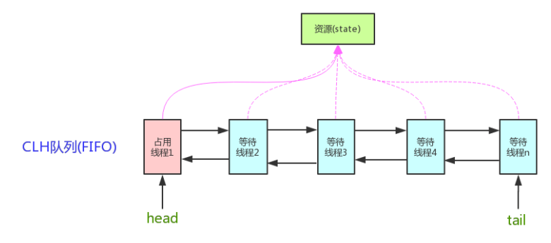

AQS
AbstractQueuedSynchronizer (AQS)：抽象队列同步器。
它是一个抽象类，主要用来构建锁，或者说同步器。
//java.util.concurrent.locks
public abstract class AbstractQueuedSynchronizer extends AbstractOwnableSynchronizer implements java.io.Serializable {}
AQS 提供了一些通用功能的实现，因此，使用 AQS 能简单且高效地构造出应用广泛的大量的同步器，比如:
- ReentrantLock，
- Semaphore，
- ReentrantReadWriteLock，
- SynchronousQueue，
- FutureTask(jdk1.7)
等等皆是基于 AQS 的。
原理
核心思想：
请求的共享资源空闲，
- 请求资源的线程设置为有效的工作线程，
- 将共享资源设置为锁定状态。
请求的共享资源被占用，需要一套线程阻塞等待以及被唤醒时锁分配的机制，这个机制 AQS 是用 CLH 队列锁 实现的，即将暂时获取不到锁的线程加入到队列中。
CLH(Craig,Landin,and Hagersten)队列是一个虚拟的双向队列（虚拟的双向队列即不存在队列实例，仅存在结点之间的关联关系）。AQS 是将每条请求共享资源的线程封装成一个 CLH 锁队列的一个结点（Node）来实现锁的分配。
AQS实现
- 用一个volatile int 成员变量state来表示争抢的共享资源的同步状态，CAS修改，
- 通过内置的 FIFO(CLH) 队列来完成获取资源线程的排队工作。

AQS 定义两种资源共享方式
- 独占：只有一个线程能执行如
- ReentrantLock
- 共享：多个线程可同时执行，如
- Semaphore、
- CountDownLatCh、
- CyclicBarrier、
- ReadWriteLock
ReentrantReadWriteLock 可以看成是组合式，因为 ReentrantReadWriteLock 也就是读写锁允许多个线程同时对某一资源进行读，不过写时独占。
独占和共享都可分为：
- 公平锁 ：按照线程在队列中的排队顺序，先到者先拿到锁；
- 非公平锁 ：当线程要获取锁时，先通过两次 CAS 操作去抢锁，如果没抢到，当前线程再加入到队列中等待唤醒。
基于AQS自定义锁
AQS采用模板方法模式，自定义同步器时需要重写下面几个 AQS 提供的模板方法(对于共享资源 state 的获取和释放)：
isHeldExclusively() //该线程是否正在独占资源。只有用到condition才需要去实现它。
tryAcquire(int) //独占方式。尝试获取资源，成功则返回true，失败则返回false。
tryRelease(int) //独占方式。尝试释放资源，成功则返回true，失败则返回false。
tryAcquireShared(int) //共享方式。尝试获取资源。负数表示失败；0表示成功，但没有剩余可用资源；正数表示成功，且有剩余资源。
tryReleaseShared(int) //共享方式。尝试释放资源，成功则返回true，失败则返回false。
一般来说，自定义同步器:
- 要么是独占方法，只需实现tryAcquire-tryRelease、
- 要么是共享方式，只需实现tryAcquireShared-tryReleaseShared.
但 AQS 也支持自定义同步器同时实现独占和共享两种方式，如ReentrantReadWriteLock。
基于AQS的jdk中的锁
独占锁
1. ReentrantLock
ReentrantLock中公平锁和非公平锁实现的区别，
- 在于公平锁只tryAquire一次，并且还要判断队列中是否有先于它的线程存在，
- 而非公平锁要tryAquire两次，并且不判断队列。
ReentrantLock 默认采用非公平锁（更好的性能），通过 boolean 来决定是否用公平锁（传入 true 用公平锁）。
共享锁
1. Semaphore（信号量）
默认非公平模式;
功能：
可以指定多个线程同时访问某个资源。
实现方式：
它默认构造 AQS 的 state 为 permits。当执行任务的线程数量超出 permits，那么多余的线程将会被放入阻塞队列 Park,并自旋判断 state 是否大于 0。只有当 state 大于 0 的时候，阻塞的线程才能继续执行,此时先前执行任务的线程继续执行 release() 方法，release() 方法使得 state 的变量会加 1，那么自旋的线程便会判断成功。 如此，每次只有最多不超过 permits 数量的线程能自旋成功，便限制了执行任务线程的数量。
Semaphore 对应的两个构造方法如下：
public Semaphore(int permits) {
sync = new NonfairSync(permits);
}
public Semaphore(int permits, boolean fair) {
sync = fair ? new FairSync(permits) : new NonfairSync(permits);
}
使用示例：
public class SemaphoreExample1 {
// 请求的数量
private static final int threadCount = 550;
public static void main(String[] args) throws InterruptedException {
// 创建一个具有固定线程数量的线程池对象（如果这里线程池的线程数量给太少的话你会发现执行的很慢）
ExecutorService threadPool = Executors.newFixedThreadPool(300);
// 一次只能允许执行的线程数量。
final Semaphore semaphore = new Semaphore(20);
for (int i = 0; i < threadCount; i++) {
final int threadnum = i;
threadPool.execute(() -> {// Lambda 表达式的运用
try {
semaphore.acquire();// 获取一个许可，所以可运行线程数量为20/1=20
test(threadnum);
semaphore.release();// 释放一个许可
} catch (InterruptedException e) {
// TODO Auto-generated catch block
e.printStackTrace();
}
});
}
threadPool.shutdown();
System.out.println("finish");
}
public static void test(int threadnum) throws InterruptedException {
Thread.sleep(1000);// 模拟请求的耗时操作
System.out.println("threadnum:" + threadnum);
Thread.sleep(1000);// 模拟请求的耗时操作
}
}
2. CountDownLatch （倒计时器）
功能
允许 count 个线程阻塞在一个地方，直至所有线程的任务都执行完毕。
实现方式
它默认构造 AQS 的 state 值为 count。当线程使用 countDown() 方法时,其实使用了tryReleaseShared方法以 CAS 的操作来减少 state,直至 state 为 0 。当调用 await() 方法的时候，如果 state 不为 0，那就证明任务还没有执行完毕，await() 方法就会一直阻塞，也就是说 await() 方法之后的语句不会被执行。然后，CountDownLatch 会自旋 CAS 判断 state == 0，如果 state == 0 的话，就会释放所有等待的线程，await() 方法之后的语句得到执行。
使用示例
public class CountDownLatchExample1 {
// 请求的数量
private static final int threadCount = 550;
public static void main(String[] args) throws InterruptedException {
// 创建一个具有固定线程数量的线程池对象（如果这里线程池的线程数量给太少的话你会发现执行的很慢）
ExecutorService threadPool = Executors.newFixedThreadPool(300);
final CountDownLatch countDownLatch = new CountDownLatch(threadCount);
for (int i = 0; i < threadCount; i++) {
final int threadnum = i;
threadPool.execute(() -> {// Lambda 表达式的运用
try {
test(threadnum);
} catch (InterruptedException e) {
// TODO Auto-generated catch block
e.printStackTrace();
} finally {
countDownLatch.countDown();// 表示一个请求已经被完成
}
});
}
countDownLatch.await();
threadPool.shutdown();
System.out.println("finish");
}
public static void test(int threadnum) throws InterruptedException {
Thread.sleep(1000);// 模拟请求的耗时操作
System.out.println("threadnum:" + threadnum);
Thread.sleep(1000);// 模拟请求的耗时操作
}
}
两种典型用法
1、某一线程在开始运行前等待 n 个线程执行完毕。
将 CountDownLatch 的计数器初始化为 n （
new CountDownLatch(n)），每当一个任务线程执行完毕，就将计数器减 1 （countdownlatch.countDown()），当计数器的值变为 0 时，在 CountDownLatch 上await()的线程就会被唤醒。一个典型应用场景就是启动一个服务时，主线程需要等待多个组件加载完毕，之后再继续执行。
2、实现多个线程开始执行任务的最大并行性。
注意是并行性，不是并发，强调的是多个线程在某一时刻同时开始执行。类似于赛跑，将多个线程放到起点，等待发令枪响，然后同时开跑。做法是初始化一个共享的 CountDownLatch 对象，将其计数器初始化为 1 （
new CountDownLatch(1)），多个线程在开始执行任务前首先coundownlatch.await()，当主线程调用countDown()时，计数器变为 0，多个线程同时被唤醒。
3. CyclicBarrier(循环栅栏)
功能
CyclicBarrier 和 CountDownLatch 类似，它也可以实现线程间的技术等待，但是功能更加复杂和强大。
实现方法
CyclicBarrier 的字面意思是可循环使用（Cyclic）的屏障（Barrier）。它要做的事情是：让一组线程到达一个屏障（也可以叫同步点）时被阻塞，直到最后一个线程到达屏障时，屏障才会开门，所有被屏障拦截的线程才会继续干活。
CyclicBarrier 默认的构造方法是 CyclicBarrier(int parties)，其参数表示屏障拦截的线程数量，每个线程调用 await() 方法告诉 CyclicBarrier 我已经到达了屏障，然后当前线程被阻塞。
public CyclicBarrier(int parties) {
this(parties, null);
}
public CyclicBarrier(int parties, Runnable barrierAction) {
if (parties <= 0) throw new IllegalArgumentException();
this.parties = parties;
this.count = parties;
this.barrierCommand = barrierAction;
}
parties 就代表了有拦截的线程的数量，当拦截的线程数量达到这个值的时候就打开栅栏，让所有线程通过。
CountDownLatch 的实现是基于 AQS 的，而 CycliBarrier 是基于 ReentrantLock 和 Condition 的。
应用场景
可以用于多线程计算数据，最后合并计算结果的应用场景。比如我们用一个 Excel 保存了用户所有银行流水，每个 Sheet 保存一个帐户近一年的每笔银行流水，现在需要统计用户的日均银行流水，先用多线程处理每个 sheet 里的银行流水，都执行完之后，得到每个 sheet 的日均银行流水，最后，再用 barrierAction 用这些线程的计算结果，计算出整个 Excel 的日均银行流水。
使用示例
public class CyclicBarrierExample2 {
// 请求的数量
private static final int threadCount = 550;
// 需要同步的线程数量
private static final CyclicBarrier cyclicBarrier = new CyclicBarrier(5);
public static void main(String[] args) throws InterruptedException {
// 创建线程池
ExecutorService threadPool = Executors.newFixedThreadPool(10);
for (int i = 0; i < threadCount; i++) {
final int threadNum = i;
Thread.sleep(1000);
threadPool.execute(() -> {
try {
test(threadNum);
} catch (InterruptedException e) {
// TODO Auto-generated catch block
e.printStackTrace();
} catch (BrokenBarrierException e) {
// TODO Auto-generated catch block
e.printStackTrace();
}
});
}
threadPool.shutdown();
}
public static void test(int threadnum) throws InterruptedException, BrokenBarrierException {
System.out.println("threadnum:" + threadnum + "is ready");
try {
/**等待60秒，保证子线程完全执行结束*/
cyclicBarrier.await(60, TimeUnit.SECONDS);
} catch (Exception e) {
System.out.println("-----CyclicBarrierException------");
}
System.out.println("threadnum:" + threadnum + "is finish");
}
}
- CountDownLatch 可以让某一个线程等待直到倒计时结束，再开始执行；也可以一个子线程执行结束后，然后countdown(),主线程调用await阻塞等待所有子线程执行完毕，再往下执行。
- CyclicBarrier 让一组线程到达一个屏障（也可以叫同步点）时被阻塞，直到最后一个线程到达屏障时，屏障才会开门，所有被屏障拦截的线程才会继续干活
上面两个共享锁使用场景一样。